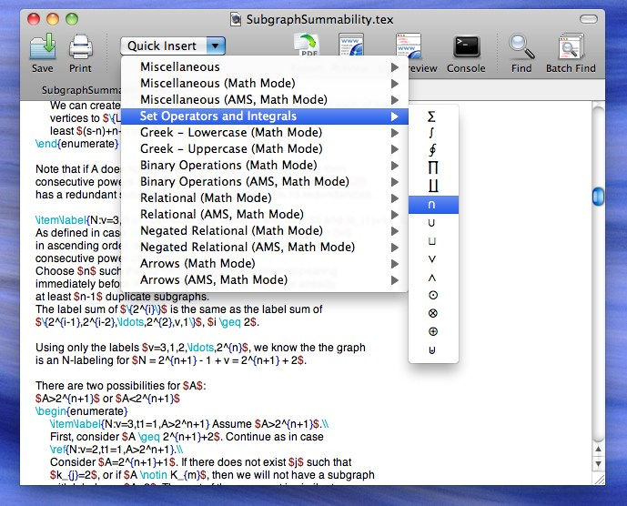
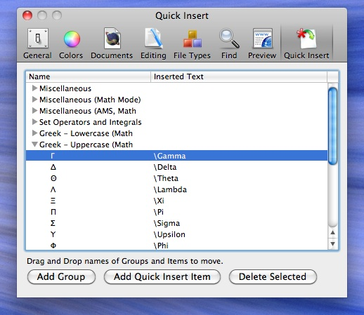

Latexian Help
> Quick Insert

Quick Insert Menu

Quick Insert Preferences
With the Quick Insert toolbar menu, you can insert common LaTeX symbols and special characters in your document. The contents of the Quick Insert menu can be modified in the "Quick Insert" section of the Preferences.